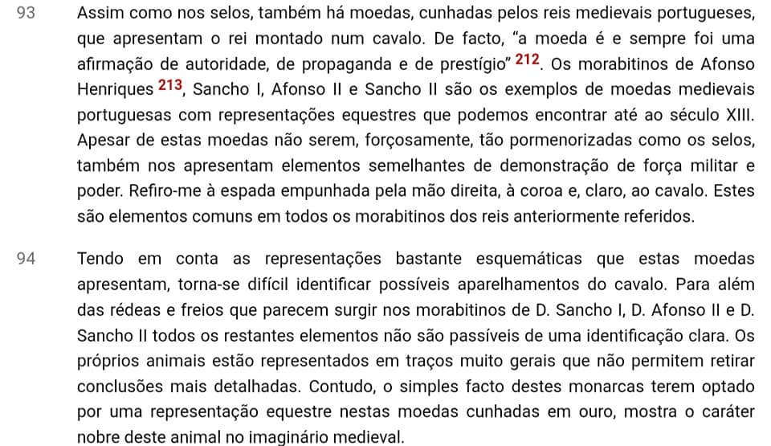
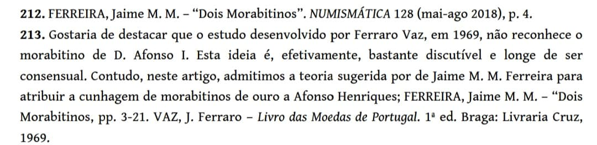

Um artigo bem recente da medievalista, que revela o enorme contributo que os senhores da ANP, na sua inestimável erudição e tradição de qualidade, têm trazido ao aperfeiçoamento da numismática e à compreensão da história. Neste caso, o contributo foi do Jaime Ferreira, um dos maiores intelectuais daquela casa e espelho da linha de pensamento seguida. Ora aí está o morabitino de D. Afonso Henriques. Ler no OpenEdition